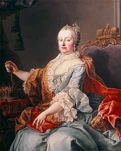

María Teresa I de Austria(Viena, 13 de mayo de 1717 - ibidem, 29 de noviembre de 1780)1 fue la primera y única mujer que gobernó sobre los dominios de los Habsburgo y la última jefa de la casa de Habsburgo, pues a partir de su matrimonio la dinastía pasó a llamarse Casa de Habsburgo-Lorena.
Fue archiduquesa y soberana de Austria, Hungría, Bohemia y Croacia, duquesa de Mantua, Milán, Galitzia y Lodomeria, Parma y los Países Bajos Austríacos desde 1740 hasta su muerte. Por su matrimonio con Francisco I, fue también emperatriz consorte del Sacro Imperio Romano Germánico, duquesa de Lorena y gran duquesa de Toscana. Está considerada como una déspota ilustrada y fue la cabeza de uno de los Estados más importantes de su época, pues gobernó gran parte de la Europa Central.
Su reinado de 40 años comenzó con la muerte de su padre Carlos VI, en octubre de 1740. Su ascenso al trono solo fue posible con la promulgación de la Pragmática Sanción de 1713, ya que los territorios de los Habsburgo estaban regidos por la Ley Sálica, que impedía la sucesión femenina. (Crankshaw, 1969, p. 11-12) Cuando este murió, Sajonia, Prusia, Baviera y Francia rechazaron el documento que habían reconocido como legítimo hasta entonces. Prusia invadió la provincia de Silesia y provocó un conflicto de nueve años, conocido como la guerra de sucesión austríaca. Más tarde, María Teresa intentaría sin éxito reconquistar Silesia durante la guerra de los Siete Años.
Se casó con Francisco Esteban de Lorena, el futuro Francisco I del Sacro Imperio Romano Germánico, y tuvo con él 16 hijos, entre ellos las reinas María Antonieta de Austria y María Carolina de Austria, la duquesa María Amelia de Habsburgo-Lorena y dos emperadores del Sacro Imperio Romano Germánico: José II y Leopoldo II (ambos cogobernantes de Austria y Bohemia, junto con su madre). (Dawson Beales, 1987, p. 39)
María Teresa fue responsable de la mayoría de las grandes reformas financieras y educativas realizadas en sus dominios, con el apoyo del conde Federico Guillermo de Haugwitz y Gottfried van Swieten, promovió el comercio, desarrolló la agricultura y reorganizó el ejército austriaco, lo que fortaleció la posición internacional de Austria. Sin embargo, se negó a permitir la tolerancia religiosa,Nota 2 lo que hizo que sus contemporáneos calificaran su régimen como prejuicioso y supersticioso. (Dawson Beales, 1987, p. 69) Como joven monarca que luchó en dos guerras dinásticas, María Teresa creía que su causa debería ser la de sus súbditos pero, en sus últimos años, pasó a creer que su causa era la que debía prevalecer. (Treasure, 1985, p. 410)
Índice
1 Primeros años
2 Matrimonio
3 Reinado
3.1 Ascenso al trono
3.2 Guerra de sucesión austriaca
3.3 Guerra de los Siete Años
4 Hijos y vida familiar
4.1 Descendencia
5 Visión religiosa y política
5.1 Jesuitas
5.2 Judíos y protestantes
6 Reformas
6.1 Medicina
6.2 Derechos civiles
6.3 Iglesia
6.4 Educación
7 Últimos años
8 Muerte y legado
9 Ancestros
10 Referencias
11 Notas
12 Enlaces externos
13 Bibliografía
Primeros años
María Teresa era la segunda hija del matrimonio formado por Carlos VI del Sacro Imperio Romano Germánico e Isabel Cristina de Brunswick-Wolfenbüttel. Nació la mañana del 13 de mayo de 1717 en el Palacio Imperial de Hofburg, en Viena, poco después de que muriera su hermano mayor y heredero imperial, Leopoldo Juan. Fue bautizada por la noche ese mismo día y tuvo como madrinas a su abuela, la emperatriz Leonor Magdalena de Palatinado-Neoburgo (viuda de Leopoldo I) y su tía, la emperatriz Guillermina Amalia de Brunswick-Luneburgo, viuda de José I). (Morris, 2007, p. 21-22) En la ceremonia del bautismo, la joven heredera fue llevada por sus primas, las archiduquesas María Josefa y María Amalia (hijas de José I) bajo la atenta mirada de la emperatriz viuda Guillermina. (Crankshaw, 1969, p. 17)(Mahan, 2007, p. 5-6)
Su abuelo, Leopoldo I, había tenido 16 hijos, de los que pocos llegaron a la edad adulta. Fue sucedido por su hijo José I, que solo tuvo hijas y quien a su vez fue sucedido por su hermano Carlos VI. Estaba claro que ella sería la heredera del trono, a pesar de que Leopoldo I había dictado un decreto (que habían firmado todos sus hijos) en el que daba prioridad a las hijas de José I. (Crankshaw, 1969, p. 17)(Mahan, 2007, p. 5-6) Carlos VI era el último miembro varón de la Casa de Habsburgo y esperaba engendrar un heredero que pudiera sucederlo para impedir así la extinción de la dinastía. El nacimiento de María Teresa fue una gran decepción, no solo para su padre (que nunca pudo superar no tener un heredero varón), sino para todos los vieneses. (Mahan, 2007, p. 11-12)(Morris, 2007, p. 8)
archiduquesa María Teresa en 1727, por Andreas Möller. Las flores que lleva sobre su vestido representan la fertilidad y la expectativa de engendrar hijos en la edad adulta. (Levy, 2003, p. 122)
María Teresa, con sus hermanas María Ana y María Amalia junto a sus padres, por Martin van Meytens.
María Teresa sustituyó a María Josefa como heredera presunta de los dominios de los Habsburgo desde que nació. La Pragmática Sanción emitida por Carlos VI en 1713 colocaba a sus hijas a la cabeza de la línea sucesoria, en detrimento de sus sobrinas. (Ingrao, 2000, p. 129) Carlos buscó la aprobación de otras potencias europeas para desheredar a sus sobrinas. Esos países impusieron duras condiciones para apoyar al emperador: por el tratado de Viena, Gran Bretaña exigía el cierre de las actividades de la Compañía de Ostende. (Crankshaw, 1969, p. 24) La Pragmática Sanción fue reconocida por Gran Bretaña, Francia, Sajonia-Polonia, Países Bajos, España, (Jones, 2002, p. 89) Venecia, (Crankshaw, 1969, p. 37) los Estados Pontificios, (Crankshaw, 1969, p. 37) Prusia,2 Rusia, (Crankshaw, 1969, p. 37) Dinamarca,2 Cerdeña,2 Baviera2 y el Reichstag del Sacro Imperio.2 No obstante, Francia, España, Sajonia-Polonia, Baviera y Prusia retiraron posteriormente su reconocimiento.2
Poco más de un año después de su nacimiento, María Teresa tuvo una hermana, la archiduquesa María Ana, que nació el 18 de septiembre de 1718. Después, en 1724, nació la archiduquesa María Amalia, que murió a los seis años.Nota 3 Los retratos de la familia imperial muestran que María Teresa se parecía bastante a su madre. (Mahan, 2007, p. 23) El embajador prusiano dejó constancia de que tenía unos grandes ojos azules, pelo claro ligeramente rojizo, boca grande y un cuerpo robusto. (Treasure, 1985, p. 410)(Mahan, 2007, p. 228) Sus padres y sus abuelos no estaban emparentados entre sí y María Teresa fue uno de los pocos Habsburgo cuyos antepasados no tenían restos de consanguinidad.Nota 4
María Teresa era una niña seria y reservada a la que le gustaba practicar canto y tiro con arco. (Morris, 2007, p. 22) Su padre le prohibió montar a caballo pero aprendió lo básico de equitación para la ceremonia de coronación húngara. La familia imperial tenía la costumbre de representar escenas de óperas, muchas veces conducidas por el propio Carlos VI, en las cuales María Teresa participaba con entusiasmo. (Crankshaw, 1969, p. 19-21) Su educación estuvo a cargo de los jesuitas que, según sus contemporáneos, no le dieron la educación adecuada. Su ortografía y su puntuación eran pobres y no utilizaba un lenguaje formal al expresarse.Nota 5 María Teresa estableció una estrecha relación de amistad con la condesa Marie Karoline von Fuchs-Mollard, que fue designada por su madre para enseñarle etiqueta. Recibió clases de dibujo, pintura, música y danza —disciplinas que únicamente la educaban para ser reina consorte—.(Mahan, 2007, p. 22) Con la autorización de su padre, María Teresa asistía a las reuniones del Consejo de Estado desde que tenía 14 años, pero no podía discutir los asuntos políticos. (Morris, 2007, p. 28) Aunque dedicó las últimas décadas de su vida a intentar asegurar la herencia de su hija, Carlos VI siempre deseó el nacimiento de un hijo varón y nunca preparó a su hija para su futuro papel de soberana. (Crankshaw, 1969, p. 20) (Browning, 1995, p. 37)
Matrimonio
María Teresa y Francisco de Lorena en su banquete de boda, por Martin van Meytens.
La cuestión sobre el matrimonio de María Teresa comenzó a tratarse cuando esta aún era una niña. Inicialmente se concertó un compromiso con Leopoldo Clemente de Lorena, que debería ir a Viena en 1723 para conocerla. No obstante, el príncipe murió de viruela el 4 de junio de ese año, con solo dieciseis años. (Mahan, 2007, p. 24-25)
El hermano de Leopoldo, Francisco Esteban de Lorena, fue invitado a visitar Viena en su lugar. Aunque el príncipe era el candidato favorito para casarse con María Teresa, (Crankshaw, 1969, p. 22) el emperador también consideró otras posibilidades. No obstante, diferencias religiosas impidieron el compromiso matrimonial con el calvinista Federico de Prusia. En 1725, Carlos VI propuso la unión de María Teresa con Carlos de España —un año mayor— y de María Ana con el infante Felipe. Sin embargo, otras potencias europeas lo obligaron a abandonar el pacto firmado con la reina viuda Isabel Farnesio, ya que el matrimonio de los herederos de los tronos de España y Austria destruiría el llamado «equilibrio europeo». María Teresa, que ya se había enamorado de Francisco, se sintió aliviada porque las negociaciones no llegaran a buen puerto. (Mahan, 2007, p. 26)(Morris, 2007, p. 25-26)
Francisco Esteban permaneció en la corte austriaca hasta 1729, cuando ascendió al trono de Lorena, (Mahan, 2007, p. 27) pero el compromiso con María Teresa solo se oficializó el 31 de enero de 1736, durante la guerra de sucesión polaca. (Mahan, 2007, p. 37) Luis XV de Francia le exigió al prometido de María Teresa que entregara el ducado de Lorena como compensación a su suegro, Estanislao I, que había sido depuesto.Nota 6 Francisco Esteban recibió el gran ducado de Toscana tras la muerte del gran duque Juan Gastón de Médici, que no tenía herederos. (Crankshaw, 1969, p. 25) La ceremonia de boda se celebró el 12 de febrero de 1736. (Mahan, 2007, p. 38)
María Teresa y Francisco Esteban, por Peter Kobler von Ehrensorg.
El amor de la duquesa de Lorena por su marido era fuerte y posesivo. (Mahan, 2007, p. 261)(McGill, 1972, p. 43) Las cartas que ella le envió poco antes de la boda expresaban sus ansias por verle; mientras que las de él, al contrario, eran formales. (Leland Goldsmith, 1936, p. 55)(Mahan, 2007, p. 39) María Teresa era extremadamente celosa y la infidelidad del marido fue su mayor problema durante el matrimonio. (Mahan, 2007, p. 261-262)(Pick, 1966, p. 260) María Guillermina von Neipperg, princesa de Auersperg, fue la amante más famosa de Francisco. (Mahan, 2007, p. 262-263)(Leland Goldsmith, 1936, p. 171-172)(Morris, 2007, p. 85)
Con la muerte de Juan Gastón, el 9 de julio de 1737, Francisco Esteban cedió el ducado de Lorena y se convirtió en gran duque de Toscana. En 1738, Carlos VI envió a la joven pareja para hacer su entrada oficial como los nuevos soberanos del país. Para el evento se erigió un arco de triunfo en la Porta Galla, un monumento que aún sigue en pie. Sin embargo, su estancia en Florencia fue breve, pues el emperador Carlos, que temía morir sin tener a su heredera cerca, los llamó de vuelta a Viena. (Crankshaw, 1969, p. 19-21) En el verano de 1738, Austria sufrió derrotas en el transcurso de la guerra ruso-turca. Los turcos le dieron la vuelta a las victorias austriacas en Serbia, Valaquia y Bosnia. Los vieneses se rebelaron por los costes de la guerra y despreciaron a Francisco Esteban, llamándolo «cobarde espía francés». (Crankshaw, 1969, p. 26) La guerra terminó el año siguiente con la firma del Tratado de Belgrado.3
reinado
Ascenso al trono
Estatua de María Teresa (Bad Saulgau).
Cortejo de María Teresa por Der Graben el 22 de noviembre de 1740. La soberana embarazada se encamina a la catedral de San Esteban de Viena para asistir a la misa solemne antes de los homenajes por su ascenso al trono. (Spielman, 1993, p. 207)
María Teresa como reina de Hungría en 1744.
Carlos VI murió el 20 de octubre de 1740 en el Palacio Augarten en Viena, probablemente debido a la ingestión de setas venenosas. Este había ignorado los consejos del príncipe Eugenio de Saboya para concentrarse en fortalecer el tesoro y equipar al ejército en vez de recoger firmas de apoyo de monarcas aliados. (Ingrao, 2000, p. 129) El emperador, que se dedicó durante todo su reinado a asegurar el cumplimiento de la Pragmática Sanción, dejó a Austria arruinada económicamente, situación agravada con las recientes guerras ruso-turca y de sucesión polaca. (Crankshaw, 1969, p. 3) El tesoro contenía únicamente 100 000 florines, que fueron reivindicados por su viuda. (Morris, 2007, p. 47) El ejército contaba con solo 80 000 hombres, muchos de los cuales no habían recibido sus salarios pero que, aun así, eran extremadamente leales a su nueva soberana. (Saperstein, 1996, p. 33)(Roider, 1973, p. 22, 103)
María Teresa se encontraba en una situación difícil: no sabía lo suficiente sobre cuestiones de Estado ni sabía cuán débiles eran los ministros de su padre. Decidió seguir los consejos paternos y mantuvo a sus consejeros aunque dejó al marido, a quien consideraba más experimentado, el resto de los asuntos. Estas decisiones, aunque consideradas normales, se mostrarían poco útiles. Diez años después, María Teresa recordó con amargura, en su Testamento político, las circunstancias en las que asumió el trono: «Me encontré sin dinero, sin crédito, sin ejército, sin experiencia ni conocimiento de mi condición y, finalmente, sin nadie para aconsejarme, pues todos esperaban ver cómo las cosas iban a evolucionar». (Browning, 1995, p. 37)(Dawson Beales, 1987, p. 24)
Descartó la posibilidad de que otros países pudieran apoderarse de sus territorios e inmediatamente comenzó a afianzar la dignidad imperial. (Browning, 1995, p. 37-38) Ya que las mujeres no podían ser elegidas soberanas del Sacro Imperio Romano Germánico, María Teresa deseaba asegurar la dignidad para su marido —algo difícil, pues Francisco Esteban no poseía grandes territorios ni una posición destacada entre los príncipes electores—.Nota 7 Para que pudiera ser considerado elegible al trono imperial y tuviese derecho al voto como elector de Bohemia (lo que ella no podía hacer por ser mujer), María Teresa convirtió a Francisco Esteban en corregente de las tierras de Austria y Bohemia el 21 de noviembre de 1740. (Dawson Beales, 1987, p. 183) No obstante, la Dieta de Hungría tardó más de un año en aceptar al príncipe como corregente. (Browning, 1995, p. 38)(Dawson Beales, 1987, p. 188-189) A pesar del amor que sentía y de su posición de corregente, María Teresa nunca permitió que su marido decidiese sobre los asuntos de Estado y, muchas veces, lo echaba de las reuniones del consejo cuando no estaba de acuerdo en algún punto. (Roider, 1973, p. 8) La primera exhibición de autoridad de la nueva soberana fue el homenaje formal que prestaron los estados de la Baja Austria el 22 de noviembre de 1740. Fue un acto público que sirvió como demostración oficial del reconocimiento y de la legitimación de su ascenso al trono. El juramento de fidelidad a María Teresa fue proferido ese mismo día en Hofburg. (Spielman, 1993, p. 207)
Guerra de sucesión austriaca
Artículos principales: Guerra de sucesión austriaca, Guerras de Silesia y Primera Guerra de Silesia.
María Teresa I de Austria, 1742
Federico II de Prusia, el archienemigo de María Teresa (a quien llamaba «ese hombre malo») por Antoine Pesne. (Holborn, 1982, p. 218)
Poco después de que María Teresa subiera al trono, algunos de los monarcas europeos que habían reconocido su derecho al trono rompieron sus promesas de apoyo. Isabel de Farnesio y Carlos Alberto de Wittelsbach, elector de Baviera, casado con la prima de esta, María Amelia de Austria, y apoyado por su emperatriz viuda Guillermina, exigieron su parte de la herencia. (Morris, 2007, p. 47) La emperatriz consiguió en 1740 el reconocimiento del rey Carlos Manuel III de Cerdeña, que no había aceptado anteriormente la Pragmática Sanción. (Browning, 1995, p. 38)
En diciembre, el rey Federico II de Prusia invadió Silesia —dando inicio a la Primera Guerra de Silesia, 1740-1742— y exigió la posesión de la entonces provincia de los Habsburgo amenazando con aliarse contra María Teresa si esta se negaba. La emperatriz decidió luchar por la provincia, la más rica en yacimientos minerales.(Crankshaw, 1969, p. 43) Federico le propuso un acuerdo: él defendería los derechos al trono de María Teresa si ella le cedía, al menos, una parte de Silesia. Francisco Esteban no veía con malos ojos el acuerdo, pero María Teresa y sus consejeros rechazaron la propuesta ante el temor de que cualquier violación a la Pragmática Sanción pudiera invalidar el conjunto del documento. (Browning, 1995, p. 43) La firmeza de la emperatriz convenció al marido de que deberían luchar por Silesia,Nota 8 pues ella confiaba en que recuperaría la «joya de la Casa de Austria». (Browning, 1995, p. 42, 44)
Como Austria disponía de pocos comandantes con experiencia, María Teresa convocó al mariscal Wilhelm von Neipperg, que había sido encarcelado por su padre debido a sus fracasos en la guerra contra los turcos. (Browning, 1995, p. 44) Neipperg asumió el mando de las tropas austriacas en marzo y, en abril de 1741, Austria sufrió una derrota estrepitosa en la batalla de Mollwitz. (Browning, 1995, p. 52-53) Francia llegó a elaborar un plan para repartir las posesiones austriacas entre Prusia, Baviera, Sajonia y España. (Crankshaw, 1969, p. 56) Cuando el mariscal Charles Fouquet, duque de Belle-Isle, se unió a Federico II en Olomouc, en Viena cundió el pánico, así como entre los consejeros de María Teresa que no esperaban que Francia los traicionase. Francisco Esteban instó a su esposa María Teresa a que intentara aproximarse a Prusia, tal y como había hecho con Gran Bretaña. (Crankshaw, 1969, p. 57) María Teresa estuvo de acuerdo, aunque reticente, con respecto a las negociaciones. (Crankshaw, 1969, p. 58)
Contra todo pronóstico, María Teresa recibió un apoyo significativo desde Hungría. (Browning, 1995, p. 66) Su coronación como «rey» de los húngaros se produjo en la catedral de San Martín en Bratislava el 25 de junio de 1741, tras meses negociando con la Dieta y perfeccionando sus habilidades como amazona, necesarias para la ceremonia.Nota 9 En julio, los intentos de conciliación se habían desmoronado totalmente. El elector de Sajonia, antiguo aliado de María Teresa, se convirtió en su enemigo (Crankshaw, 1969, p. 75) y Jorge II de Gran Bretaña declaró la neutralidad del elector de Hanóver. (Crankshaw, 1969, p. 77) Una vez más, la soberana necesitaba la ayuda de Hungría y, para obtenerla, concedió favores a los nobles húngaros, adulándolos sin atender a la totalidad de sus exigencias. Ya había logrado su apoyo anteriormente, cuando llegó a Bratislava en septiembre de 1741, con la esperanza de persuadir a la Dieta para que se convocase y reconociera a Francisco Esteban como corregente. Al alcanzar sus objetivos, demostró sus dones teatrales abrazando triunfalmente a su hijo y heredero José ante la Dieta, con lo que consiguió la simpatía de los nobles. (Browning, 1995, p. 67)(Mahan, 2007, p. 122)(Morris, 2007, p. 74)
María Teresa es coronada «rey» de Hungría en la Catedral de San Martín (Bratislava).
Aún en 1741, las autoridades austriacas informaron a María Teresa de que la población de Bohemia prefería a Carlos Alberto de Baviera como soberano en vez de a ella. Desesperada y cansada por el embarazo, le escribió a su hermana: «No sé si la ciudad seguirá siendo mía durante mi parto». (Browning, 1995, p. 65) En carta al canciller de Bohemia, el conde Philip Kinsky, prometió amargamente no escatimar en gastos para defender su reino: «Me he decidido. Tenemos que poner todo en juego para salvar Bohemia». (Duffy, 1977, p. 151)Nota 10 El 26 de octubre, el elector de Baviera ocupó Praga y se autoproclamó rey de Bohemia. María Teresa, entonces en Hungría, lloró al saber la pérdida de otra posesión. (Browning, 1995, p. 79) Carlos Alberto fue elegido emperador por unanimidad el 24 de enero de 1742. Considerando la elección como una catástrofe, (Browning, 1995, p. 88) la soberana pilló a sus enemigos desprevenidos al insistir en hacer una campaña de invierno. (Browning, 1995, p. 92) El mismo día en que Carlos VII era elegido emperador, las tropas austriacas dirigidas por Ludwig Andreas von Khevenhüller tomaron Múnich, la capital de Baviera. (Crankshaw, 1969, p. 93)
El Tratado de Breslau, de junio de 1742, puso fin a la Primera Guerra de Silesia entre Austria y Prusia. María Teresa impuso inmediatamente como prioridad la recuperación de Bohemia, (Browning, 1995, p. 114) lo que supuso la huida de las tropas francesas ese mismo año. El 12 de mayo de 1743, se autocoronó reina de Bohemia en la catedral de San Vito. (Crankshaw, 1969, p. 96)(LeCaine Agnew, 2004, p. 84) Preocupado por los avances austriacos en la frontera con el Rin, Federico II saqueó Praga en agosto de 1744. Los planes de Francia se frustraron con la muerte de Carlos VII en enero de 1745, pero las tropas francesas consiguieron ocupar los Países Bajos Austríacos en mayo. (Crankshaw, 1969, p. 97)
Francisco Esteban fue elegido emperador el 13 de septiembre de 1745. Prusia lo reconoció como emperador y María Teresa, finalmente, reconoció la pérdida de Silesia en diciembre de 1745. (Crankshaw, 1969, p. 99) La guerra continuó tres años más, con combates en el norte de Italia y en los Países Bajos austriacos. El Tratado de Aquisgrán puso punto final al conflicto de 8 años, reconoció los derechos de Prusia sobre Silesia y determinó la cesión del ducado de Parma a Felipe, hijo de Felipe V de España. (Crankshaw, 1969, p. 100)
Guerra de los Siete Años
Artículo principal: Guerra de los Siete Años
María Teresa de Austria (1747), por Jean-Étienne Liotard.
La invasión de Sajonia por parte de Federico de Prusia en agosto de 1756 supuso el inicio de la guerra de los Siete Años. Dado que María Teresa y su canciller deseaban recuperar Silesia, se aliaron con Francia y Rusia mientras Gran Bretaña hacía lo propio con Prusia y Portugal. En América, los franceses no tuvieron la oportunidad de fortalecer las defensas de Nueva Francia y los británicos capturaron fácilmente Luisburgo en 1758 y conquistaron toda la provincia. (Jones, 2002, p. 242)
Maximilian von Browne lideraba las tropas austriacas, pero fue sustituido tras la batalla de Lobositz por Carlos Alejandro de Lorena, cuñado de María Teresa. (Crankshaw, 1969, p. 240) Federico II fue sorprendido en Lobositz, pero se reagrupó para atacar nuevamente en junio de 1757. La batalla de Kolín fue una victoria decisiva para Austria, ya que Federico II perdió un tercio de sus tropas y huyó antes de que la batalla terminara. Por su parte, María Teresa lamentó abiertamente las pérdidas francesas en 1758. Francia, que se había asegurado en 1757 la neutralidad de Gran Bretaña y Hanóver durante el resto del conflicto, (Lever, 2002, p. 243) fue derrotada en enero del año siguiente. En junio de 1758, los franceses sufrieron una derrota aplastante en la batalla de Krefeld y se retiraron del Rin. (Lever, 2002, p. 243)
En 1759, las negociaciones de paz en La Haya fueron infructuosas. (Lever, 2002, p. 255) Francia y Austria se recuperaron de sus derrotas hasta que, en 1762, la zarina Isabel I de Rusia murió. Su sucesor, el zar Pedro III, era un gran admirador de Federico II, el rey prusiano, y retiró el apoyo ruso a la coalición francesa. Prusia empezó a expulsar a los austriacos de Sajonia y a los franceses de Hesse-Kassel. Temiendo una invasión de Austria y Francia por parte de Federico II, (Lever, 2002, p. 257) capitularon. Los tratados de paz de Hubertusburgo y de París contenían pesadas exigencias en relación con Francia, que tuvo que abandonar la mayor parte de sus colonias americanas. Austria, sin embargo, volvió al statu quo prebélico. (Lever, 2002, p. 257)
Hijos y vida familiar
María Teresa con su familia (1754), por Martin van Meytens.
A lo largo de veinte años, la emperatriz dio a luz a dieciséis hijos, trece de los cuales sobrevivieron más allá de la infancia. Su primera hija, María Isabel (1737), nació poco después del primer año de matrimonio. De nuevo, el sexo del bebé causó una gran decepción, así como la de los nacimientos siguientes: María Ana (1738) y María Carolina (1740). Mientras luchaba para preservar su herencia, María Teresa dio a luz a su hijo José (1741), nombre dado en homenaje a San José, a quien le había rezado con frecuencia durante el embarazo para tener un varón. Sin embargo, su hija favorita era María Cristina (1742), que nació el día que la emperatriz cumplía veinticinco años y cuatro días después de la derrota del ejército austríaco en la batalla de Chotusitz. Cinco hijos más nacieron durante la guerra: María Isabel (1743), Carlos José (1745), María Amalia (1746), Leopoldo (1747) y María Carolina (1748). Durante este periodo no hubo descanso para María Teresa: los embarazos y los cuidados a los recién nacidos se producían al mismo tiempo que la guerra y los partos. Cinco hijos más nacieron en el periodo de paz que hubo entre la guerra de sucesión austriaca y la guerra de los Siete Años: María Juana (1750), María Josefa (1751), María Carolina (1752), Fernando Carlos (1754) y María Antonia (1755). Tuvo su último hijo, Maximiliano (1756), durante la guerra de los Siete Años, cuando ya tenía 39 años.(Mahan, 2007, p. 266-271, 313) María Teresa llegó a afirmar que, de no haber estado casi siempre embarazada, hubiera ido sola al campo de batalla. (Holborn, 1982, p. 218)(Dawson Beales, 1987, p. 21, 39)
La emperatriz viuda Isabel, madre de María Teresa, murió en 1750. Cuatro años más tarde, Marie Karoline von Fuchs-Mollard, la gobernanta por la que María Teresa sentía un gran aprecio, falleció también a los 73 años. La emperatriz le demostró su afecto haciendo que la enterraran en la Cripta Imperial de Viena, donde solo eran sepultados los miembros de la familia imperial. (Mahan, 2007, p. 22)
Apenas hubo dado a luz a sus últimos hijos, María Teresa se encontró con la tarea de casar a los mayores. Ella misma condujo las negociaciones para las bodas a la vez que se ocupaba de las campañas bélicas y del resto de obligaciones del Estado. A pesar de ser muy cariñosa con sus hijos, los usó como peones en los juegos dinásticos y sacrificó su felicidad en beneficio del Estado. (Treasure, 1985, p. 410)(Mahan, 2007, p. 271) Era una madre dedicada, pero dominante: les escribía a todos los hijos al menos una vez por semana y creía que tenía derecho de ejercer su autoridad sobre ellos, independientemente de su edad o posición. (Dawson Beales, 1987, p. 194)
La emperatriz, ya viuda, con la familia (1776), por Heinrich Füger.
María Teresa sufrió un violento ataque de viruela poco después de haber cumplido 50 años, en 1767, enfermedad que su nuera la emperatriz Josefa de Baviera le había contagiado. (Crankshaw, 1969, p. 273) María Teresa sobrevivió, no así su nuera. Entonces, obligó a su hija, la archiduquesa María Josefa, a rezar con ella en la cripta imperial, al lado de la tumba no cerrada de la nuera. La archiduquesa empezó a presentar las erupciones características de la viruela dos días después de la visita a la cripta y falleció poco después. María Carolina sustituyó a la hermana muerta como prometida del rey Fernando I de las Dos Sicilias. María Teresa se culpó de la muerte de su hija, dado que, en aquella época, no se sabía que la viruela poseía un periodo de incubación prolongado, lo que llevó a que todos creyesen que María Josefa se había contagiado por visitar la tumba de su cuñada.Nota 11
En abril de 1770 la hija menor de María Teresa, María Antonia, se casó por poderes en Viena con Luis de Borbón, delfín de Francia. La educación de la archiduquesa se descuidó cuando el francés se interesó por ella, aunque su madre intentó educarla lo mejor posible. María Teresa se escribía cada quince días con su hija, a la que ahora llamaban María Antonieta, y le regañaba por su pereza, su frivolidad y por no concebir un hijo. A María Teresa no le gustaba tampoco la personalidad reservada de Leopoldo y lo acusaba constantemente de frialdad. También criticó a María Carolina por sus actividades políticas, a Fernando por su falta de organización y a María Amalia por su pobre francés y su arrogancia. Con la única hija con la que apenas tenía problemas era María Cristina, que gozaba de la total confianza de su madre a pesar de los problemas que tenía con ella por no haber tenido hijos (ya que la archiduquesa solo tuvo una hija, María Cristina de Sajonia, que murió con un día de vida). Uno de los mayores deseos de María Teresa era tener el mayor número de nietos posible. Sin embargo, cuando murió, la emperatriz contaba con solo veinte nietos y, a excepción de su nieta mayor Carolina de Borbón-Parma, hija de María Amelia, todas las demás nietas primogénitas recibieron su nombre. (Dawson Beales, 1987, p. 194)Nota 12
 Volver
Volver